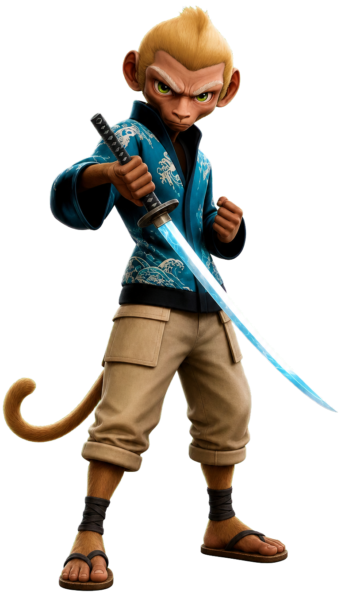

Join the Mystic Adventure
SHINSEI VILLAGE
Genuine Storytelling Project

Vision
Shinsei Village is a collection featuring 1.200 demigod monkeys. unraveling a mysterious case to their village. The prc»cct is not just a PFP collection. but a fascinating on-chatn storyline Through a focus on community engagement, the project seeks to build the new era Of Web3 entertainment,
Each stage of development is aimed to deliver tt'W adventure experience to the community. as well as provides rewards and benefits for all holders Solve v•.eekty puzzles to mystic boxes and collect SCLIJE' Uncovering the plot is entirety up to the and decisions Of the community.